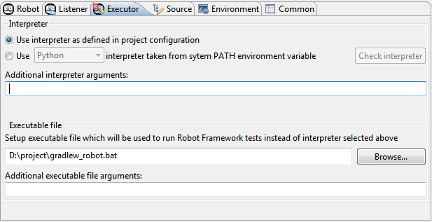
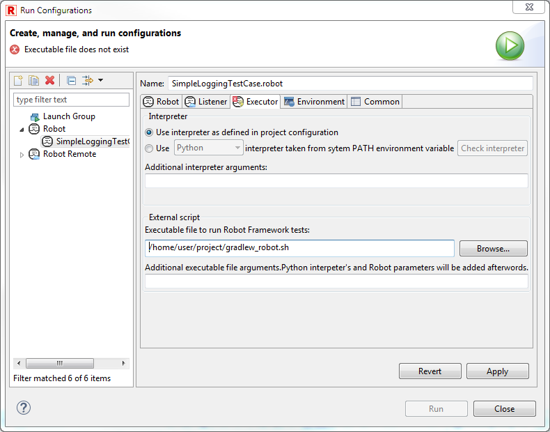

It is possible to run Robot tests from RED by launching them through script. There are at least two different possibilities for running the tests from inside of Gradle building script:
The first possibility requires having some python interpreter with RF installed (CPython, PyPy, Jython, IronPython) while the latter only requires Java (which anyway has to be installed in order to run Gradle).
We will use following simple script in order to run interpreter from RED:
task runRobot(type:Exec) {
executable robotExec
args Eval.me(robotArguments)
}
the task above expects two arguments: path to interpreter executable and a list
of it's arguments written in a form: ['arg1', 'arg2', ..., 'arg_n']
When launching the test RED does not pass arguments in form like above, moreover
Gradle passes arguments mostly using it's own syntax: -Parg=val.
Because of this we need to create own script which will perform arguments translation
(or modify Gradle Wrapper script).
Script available on GitHub: https://github.com/nokia/RED/tree/master/src/RobotUserScripts
gradlew_robot.bat
gradlew_robot.sh
It is now possible to run tests with the script above: create Robot launch configuration and set executable file at Executor tab and launch the tests as depicted on images below.


Running the tests through Gradle plugin which uses standalone JAR is very similar to running the tests using external interpreter, the only thing is that the script has to translate arguments into a form which is used by the plugin, which may of course vary depending on Gradle plugin in use. The batch/bash scripts from above may be adapted and used when calling tests this way.